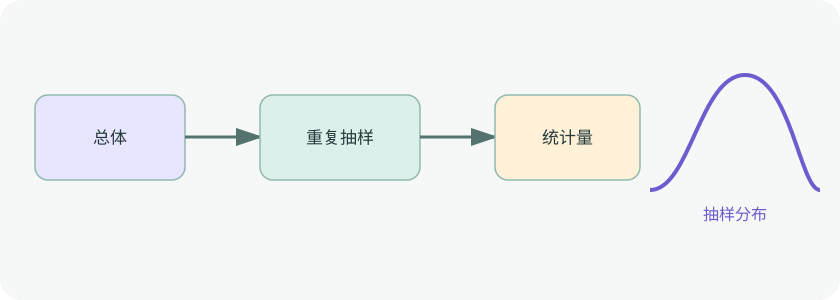

同一个总体，今天抽取一组人，明天再抽取一组人，样本均值通常不会完全相同。统计推断研究的正是这种“重复抽样会怎样变化”的规律，而标准误刻画了统计量在抽样过程中的波动。
但这里有一个关键问题：这一勺"样本"到底有多可靠？如果你只舀了表面的汤，而底部的盐还没化开，那你尝到的咸淡就不准。统计学中的抽样也是这样——方法不对，一切分析都是白搭。本章我们就来系统梳理各种抽样方法，并深入探讨抽样分布这根统计推断的"脊梁骨"。

8.1 为什么需要抽样
抽样的必要性实际上可以从三个维度来理解。其一是成本：普查所有个体往往代价高昂，甚至不可行——想想你要测量全中国14亿人的身高。其二是可行性：有些测试本身具有破坏性，比如质检中检查灯泡寿命，如果每个灯泡都测到烧坏为止，那工厂就没有产品可卖了。其三是时效性：等普查数据收集完，情况早就变了。
听起来很合理对不对？但实际工作中抽样最大的坑恰恰出现在"样本不具有代表性"这件事上。我当年在互联网公司做A/B测试时，就犯过一个经典错误——只抽取了工作日下午的用户数据做分析，结果发现新功能上线后用户参与度显著下降。但实际上，周末用户的活跃模式完全不同，我们的样本根本没反映真实情况。
8.2 抽样方法回顾
不同的场景需要不同的抽样策略。以下是四种最常用的方法：
| 抽样方法 | 英文名称 | 原理 | 适用场景 |
|---|---|---|---|
| 简单随机抽样 | Simple Random Sampling (SRS) | 每个个体被选中的概率相等 | 总体同质性强时 |
| 分层抽样 | Stratified Sampling | 按特征分层，每层内随机抽样 | 总体有明显子群体 |
| 整群抽样 | Cluster Sampling | 随机抽取若干"群"，群内全部调查 | 总体地理分布广泛 |
| 系统抽样 | Systematic Sampling | 按固定间隔抽取 | 总体排列无周期性 |
简单随机抽样（SRS）是理论基础最扎实的方法，但实际操作起来往往最困难——你需要一份完整的总体名单（sampling frame）。分层抽样在工业界很流行，因为它能保证各子群体都被覆盖。比如研究中国网民行为时，按年龄段分层就是很自然的做法。
8.3 抽样分布：样本均值的分布
抽样分布（sampling distribution）是统计推断中最重要的概念之一，可惜很多初学者都低估了它的威力。让我们从一个具体例子入手。
假设你有一个总体，比如全中国20岁男性的身高，总体均值 μ = 172 cm，总体标准差 σ = 6 cm。现在你从总体中抽取一个样本，n = 30 个人，计算样本均值 x̄。这个 x̄ 的值是多少呢？它不一定等于μ，因为抽样有随机误差。但问题是：如果你重复抽取无数次样本，每次计算一个 x̄，这些 x̄ 的分布是什么样子的？
答案就是抽样分布——样本均值的分布。而中心极限定理告诉我们，不管总体本身的分布是什么样，只要样本量足够大（通常 n ≥ 30），样本均值的分布就近似正态分布。
让我们用 Python 来直观演示这个神奇的现象。下面的代码从一个均匀分布中反复抽样，观察样本均值的分布如何趋近正态：
import numpy as np
import matplotlib.pyplot as plt
# 总体：均匀分布（完全不是正态！）
np.random.seed(42)
population = np.random.uniform(0, 100, size=100000)
# 重复抽样，每次 n=30，计算样本均值
n_samples = 10000
sample_size = 30
sample_means = []
for _ in range(n_samples):
sample = np.random.choice(population, size=sample_size, replace=True)
sample_means.append(np.mean(sample))
# 结果：sample_means 应该近似正态
mean_of_means = np.mean(sample_means)
std_of_means = np.std(sample_means, ddof=1)
print(f"总体均值（理论）: {np.mean(population):.2f}")
print(f"样本均值的均值: {mean_of_means:.2f}")
print(f"样本均值的标准差（即标准误）: {std_of_means:.2f}")
print(f"理论标准误（σ/√n）: {np.std(population, ddof=1)/np.sqrt(sample_size):.2f}")
# 如果绘制直方图，会看到一个完美的钟形曲线运行这段代码你会发现，从均匀分布中反复抽样得到的样本均值，其直方图呈现出一个非常漂亮的正态分布形状。这就是中心极限定理的魔力。
8.4 标准误 vs 标准差
这是初学者最容易混淆的一对概念。简单来说：
- 标准差（standard deviation）描述的是个体数据围绕均值的离散程度。
- 标准误（standard error）描述的是样本统计量（如样本均值）围绕总体参数的离散程度。
标准误的公式是 SE = σ / √n。从这个公式可以看出：样本量 n 越大，标准误越小——也就是说，大样本给出的估计更精确。你可能会想，如果 n 等于总体大小，标准误不就变成 0 了吗？没错，这就是普查的逻辑——如果你测量了所有人，那就不存在抽样误差了。
8.5 中心极限定理与大数定律
大数定律（Law of Large Numbers）和中心极限定理（Central Limit Theorem）是概率论的两大支柱，它们密切相关但说的是不同的事情：
- 大数定律：样本量越大，样本均值越接近总体均值。它告诉我们"结果会收敛"。
- 中心极限定理：样本量越大，样本均值的分布越接近正态分布。它告诉我们"收敛的形状是什么样的"。
打个比方：大数定律告诉你随着你尝更多勺汤，你对的咸淡判断会越来越准；中心极限定理则告诉你，如果你让很多个人每人尝一勺汤并报告咸淡程度，这些人的报告会呈正态分布——大部分人说得差不多，少数人偏差大一些。
聊完了抽样和抽样分布这些基础概念，下一章我们将正式进入统计推断的核心——点估计与区间估计。我们会讨论如何用一个数字（点估计）来猜测总体参数，以及如何用区间来表达这种猜测的不确定性。
CORE RELATION
本章核心关系
假设独立同分布抽样；有限总体不放回抽样时可能需要有限总体修正。
样本量如何影响标准误？
假设总体标准差 σ=12。拖动样本量，观察样本均值标准误的变化。
教学模拟：用于理解概念与方向，不替代真实数据分析、正式功效计算或研究设计审查。
TAKEAWAYS
本章要记住的三件事
- 样本分布描述一份样本中的数据；抽样分布描述统计量在重复抽样中的变化。
- 标准误是统计量抽样分布的标准差，不是原始数据的标准差。
- 增大样本量通常降低随机抽样误差，但不能修复选择偏差。
FURTHER READING
延伸阅读与核对来源
参考来源用于核对概念与方法。涉及具体数据、历史细节或行业案例时，应回到原始研究或官方文档逐项核验。